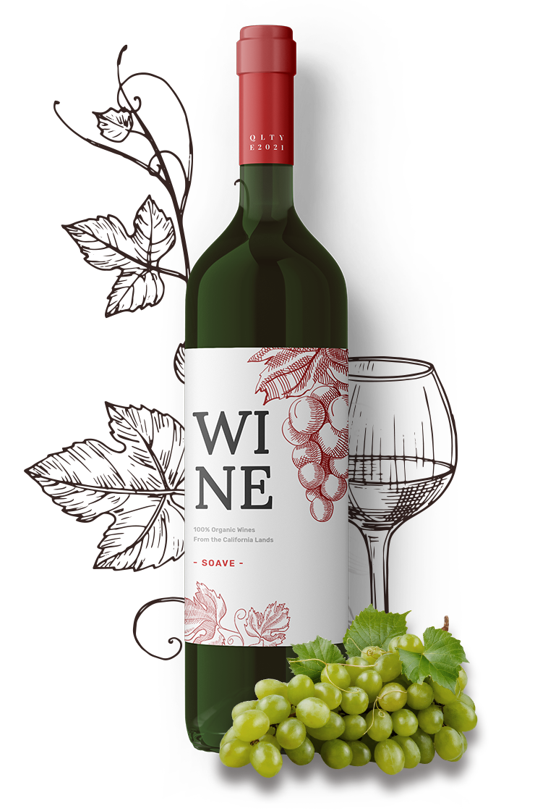

100% natural
What Makes Our Wines Special

We use only 100% natural grapes, no impurities.

Amazing Taste
We make wine from selected grapes of the best varieties.
Natural Fermentation
We do not add alcohol or any additives to increase ABV.
Naturalness
In the production of wine, we use only natural ingredients.
Wine Aging
Before bottling, the wine is aged in special oak barrels.
Ecological Safety
Grapes for wine production are grown in an ecologically clean place.
Classic Varieties
From Chardonnay to Syrah, we offer classic wines that everyone likes.